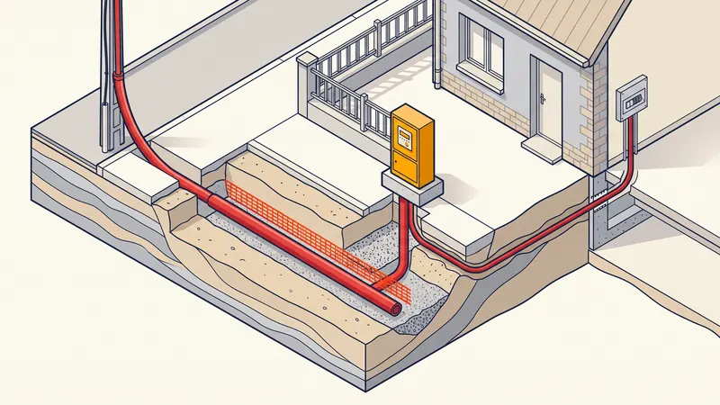

Prix Raccordement Électrique ENEDIS en 2026 : Tarifs & Guide Complet
Vous faites construire une maison neuve à Aix-en-Provence ou ailleurs en PACA et vous devez la relier au réseau électrique ? Le prix d'un raccordement électrique ENEDIS repose en réalité sur deux postes bien distincts : la part facturée par Enedis (le gestionnaire de réseau) et le coût de la tranchée de raccordement à creuser sur votre parcelle, qui relève du terrassier. Dans ce guide 2026, nous détaillons les tarifs, les normes (profondeur, fourreaux TPC, grillage avertisseur rouge), la procédure de demande et nos conseils pour économiser, notamment en mutualisant les réseaux.

Raccordement ENEDIS : deux factures, deux intervenants
C'est le point le plus mal compris des particuliers : le raccordement électrique d'une maison neuve ne se résume pas au devis Enedis. Il faut distinguer :
- (a) La partie ENEDIS : Enedis raccorde votre futur compteur depuis le réseau public de distribution jusqu'à la limite de votre propriété. Ces travaux, réalisés sur le domaine public, font l'objet d'un devis de raccordement Enedis qui intègre la « contribution » liée à la distance au réseau.
- (b) La partie TERRASSIER : sur votre terrain (le domaine privé), c'est à vous de faire ouvrir la tranchée de raccordement entre la limite de propriété et le coffret/compteur de la maison. C'est le métier de STP Terrassement : ouverture, pose des fourreaux, lit de sable, grillage avertisseur et remblai.
Comprendre cette séparation évite les mauvaises surprises : un devis Enedis « bon marché » ne dit rien du coût de la tranchée, qui peut être conséquent en sol rocheux provençal.

(a) Le coût du raccordement Enedis en 2026
La part Enedis dépend essentiellement de la distance entre votre limite de propriété et le réseau électrique, du type de raccordement (monophasé/triphasé, puissance demandée) et de la nécessité ou non d'étendre le réseau. Voici les fourchettes constatées en 2026 :
| Type de raccordement | Distance au réseau | Prix indicatif (TTC) |
|---|---|---|
| Raccordement simple maison neuve (monophasé 12 kVA) | Moins de 30 m | 1 200 - 2 500 € |
| Terrain déjà viabilisé (coffret en limite existant) | Branchement court | 900 - 1 600 € |
| Raccordement avec distance moyenne | 30 à 100 m | 2 500 - 6 000 € |
| Raccordement avec extension de réseau | Plus de 100 m | 6 000 - 15 000 € et + |
| Branchement provisoire de chantier (coffret de chantier) | Court | 1 000 - 1 800 € |
| Raccordement triphasé (puissance > 12 kVA) | Variable | Majoration 200 - 800 € |
Ces montants correspondent au devis de raccordement Enedis uniquement. Au-delà de 250 mètres ou lorsqu'il faut implanter un nouveau poste de transformation, la facture grimpe vite. Le devis Enedis est généralement valable 3 mois : il faut l'accepter et le régler pour déclencher la programmation des travaux.
(b) Le prix de la tranchée de raccordement sur votre parcelle
Sur le domaine privé, le creusement de la tranchée de raccordement électrique est à votre charge. C'est ici qu'intervient le terrassier. Le prix se compte au mètre linéaire (ml) et dépend surtout de la nature du sol, de la profondeur et des fournitures (fourreaux, sable, grillage). Découvrez aussi notre guide dédié au prix d'une tranchée au mètre linéaire.
| Poste de la tranchée électrique | Détail | Prix indicatif (HT) |
|---|---|---|
| Tranchée en sol meuble | Terre, sable, profondeur 0,50 - 0,85 m | 25 - 40 €/ml |
| Tranchée en sol calcaire / rocheux (BRH) | Roche dure typique PACA, brise-roche | 45 - 70 €/ml |
| Fourniture et pose fourreau TPC rouge Ø90/110 | Gaine annelée rouge réservée à l'électricité | 4 - 9 €/ml |
| Lit de sable + enrobage | Protection du fourreau (dessus/dessous) | 5 - 12 €/ml |
| Grillage avertisseur rouge | Posé ~20 cm au-dessus du fourreau | 1 - 3 €/ml |
| Remblai et compactage | Réutilisation déblais ou apport grave | 6 - 15 €/ml |
Au total, une tranchée électrique complète revient en moyenne à 40 à 90 €/ml tout compris en PACA, le sol calcaire d'Aix-en-Provence tirant la fourchette vers le haut. Pour une maison située à 20 m de la limite, comptez ainsi 800 à 1 800 € de terrassement, à ajouter au devis Enedis.
Les normes de la tranchée électrique (NF C 14-100)
Une tranchée de raccordement n'est pas un simple trou : elle doit respecter des règles strictes pour être validée et garantir la sécurité.
Profondeur réglementaire
- 0,50 m minimum sous un terrain non circulé (jardin, pelouse, allée piétonne)
- 0,85 m minimum sous une zone carrossable (accès véhicule, voirie)
Composition de la tranchée, de bas en haut
- Lit de sable propre au fond pour caler le fourreau
- Fourreau TPC rouge (gaine annelée double paroi) dédié à l'électricité, posé dans le sable
- Enrobage sable par-dessus le fourreau
- Grillage avertisseur rouge posé à environ 20 cm au-dessus du fourreau (le rouge = électricité)
- Remblai compacté par couches jusqu'au niveau du sol fini
Séparation des réseaux
L'électricité doit être séparée des autres réseaux par des distances minimales (en général 20 cm de l'eau/gaz et des télécoms), avec un code couleur strict : rouge pour l'électricité, bleu pour l'eau, vert pour les télécoms. Le respect de ces règles conditionne la conformité du chantier.
La procédure : de la demande à la mise sous tension
- Demande de raccordement : en ligne sur l'espace raccordement d'Enedis (ou via votre constructeur), avec permis de construire, plan de masse et plan de situation.
- Devis Enedis : Enedis chiffre la part publique selon la distance au réseau et envoie le devis sous quelques semaines.
- Acceptation et paiement du devis Enedis (valable 3 mois) pour lancer la programmation des travaux.
- Tranchée sur parcelle : le terrassier (STP) creuse, pose fourreaux, sable et grillage, puis remblaie selon les indications d'Enedis.
- Travaux Enedis sur le domaine public et tirage du câble.
- Consuel : l'attestation de conformité de votre installation intérieure est obligatoire avant la mise en service.
- Mise sous tension par Enedis et souscription d'un contrat de fourniture auprès d'un fournisseur.
Devis Gratuit pour Votre Tranchée de Raccordement
Chez STP Terrassement, nous réalisons votre tranchée électrique aux normes Enedis à Aix-en-Provence et dans toute la PACA. Devis détaillé, transparent et sans engagement.
Demandez votre devis gratuitCombiner les réseaux pour économiser
Le meilleur levier d'économie est la tranchée commune. Plutôt que d'ouvrir une tranchée par réseau, on regroupe l'électricité, la distribution d'eau potable, la fibre/télécom et parfois le gaz dans une même fouille, en respectant les distances de séparation et le code couleur. Le creusement, le sable et le remblai (les postes les plus chers) sont alors mutualisés : vous ne payez la tranchée qu'une seule fois.
Cette logique s'inscrit dans une démarche globale de viabilisation de terrain. Si vous démarrez de zéro, lisez notre guide complet sur la viabilisation d'un terrain constructible pour planifier tous les raccordements (eau, électricité, assainissement, télécom) dès le départ et diviser la facture de terrassement.
Raccordement électrique en région PACA : la roche calcaire
La part Enedis dépend surtout de la distance, mais c'est la tranchée qui fait grimper la facture en Provence. Les sols autour d'Aix-en-Provence, Simiane-Collongue ou dans l'arrière-pays sont fréquemment calcaires et rocheux. Ouvrir une tranchée à 0,50 ou 0,85 m de profondeur dans la roche impose souvent un brise-roche hydraulique (BRH), ce qui majore le coût au mètre linéaire de 30 à 60 % par rapport à un sol meuble. D'où l'intérêt d'un terrassier local connaissant la géologie provençale et capable d'anticiper ces contraintes dans son devis.
Exemple de chantier réel à Aix-en-Provence
Tranchée de raccordement électrique d'une maison neuve aux Milles
Projet : Réalisation de la tranchée de raccordement ENEDIS pour une maison neuve de 130 m², avec mutualisation eau et fibre.
Localisation : Quartier des Milles, à l'ouest d'Aix-en-Provence.
Linéaire : 28 mètres entre la limite de propriété et le coffret de comptage de la maison.
Durée : 2 jours ouvrés.
Défis rencontrés : Présence de calcaire compact à partir de 40 cm de profondeur, nécessitant un brise-roche sur une partie du tracé. Le client souhaitait éviter trois tranchées séparées pour l'électricité, l'eau et la fibre.
Solution STP : Nous avons ouvert une tranchée commune de 0,85 m sous la zone carrossable d'entrée, avec brise-roche sur 12 ml. Pose d'un fourreau TPC rouge pour Enedis, d'une gaine bleue pour l'eau et d'une gaine verte pour la fibre, le tout sur lit de sable avec grillages avertisseurs aux trois couleurs réglementaires, puis remblai compacté par couches. La mutualisation a évité au client deux ouvertures supplémentaires.
Résultat : Tranchée conforme NF C 14-100 validée sans réserve par Enedis, coût de terrassement réduit d'environ 1 600 € grâce à la tranchée commune, facture finale alignée sur le devis (2 280 € TTC pour la part terrassement).
Les erreurs courantes à éviter
- Confondre le devis Enedis et le coût total du raccordement. Le devis Enedis ne couvre pas la tranchée sur votre parcelle : prévoyez toujours le poste terrassier en plus.
- Creuser une tranchée trop peu profonde. Moins de 0,50 m (ou 0,85 m sous passage de véhicule) entraîne un refus de conformité et l'obligation de tout rouvrir.
- Utiliser le mauvais fourreau ou oublier le grillage avertisseur rouge. Le code couleur est obligatoire : sans fourreau TPC rouge ni grillage rouge, la tranchée n'est pas conforme.
- Ne pas séparer les réseaux. Mettre l'électricité au contact de l'eau ou des télécoms sans respecter les distances de sécurité est une faute grave et dangereuse.
- Oublier le Consuel. Sans attestation de conformité visée, Enedis refuse la mise sous tension, même si tout le reste est prêt.
- Ouvrir plusieurs tranchées au lieu d'une commune. C'est l'erreur la plus coûteuse : mutualiser les réseaux divise le prix du terrassement.
Questions fréquentes
Quel est le prix d'un raccordement électrique ENEDIS en 2026 ?
Pour une maison neuve avec un branchement court (moins de 30 mètres en domaine public), le devis Enedis se situe généralement entre 1 200 et 2 500 € TTC. À cela s'ajoute le coût de la tranchée de raccordement sur votre parcelle, réalisée par votre terrassier, soit 25 à 70 €/ml selon le sol. En PACA, la roche calcaire alourdit souvent la facture.
Qui paie et qui creuse la tranchée de raccordement électrique ?
Enedis réalise et facture les travaux sur le domaine public jusqu'à la limite de propriété. Sur votre terrain (domaine privé), c'est au propriétaire de faire creuser la tranchée par un terrassier comme STP Terrassement : ouverture, pose des fourreaux TPC rouges, lit de sable, grillage avertisseur rouge et remblai.
Quelle est la profondeur réglementaire d'une tranchée électrique ENEDIS ?
La norme NF C 14-100 impose une profondeur minimale de 0,50 m sous terrain non circulé et 0,85 m sous une zone carrossable. Le câble repose sur un lit de sable, est protégé par un fourreau TPC rouge et surmonté d'un grillage avertisseur rouge posé à environ 20 cm au-dessus.
Comment faire une demande de raccordement ENEDIS ?
La demande se fait en ligne sur le site d'Enedis (espace raccordement) ou via votre constructeur, avec le permis de construire, le plan de masse et le plan de situation. Enedis envoie ensuite un devis de raccordement sous quelques semaines, valable 3 mois, à accepter et régler pour lancer les travaux.
Combien coûte un branchement provisoire de chantier ENEDIS ?
Un branchement provisoire de chantier (coffret de chantier) coûte généralement entre 1 000 et 1 800 € selon la puissance et la distance au réseau. Il alimente le chantier en électricité avant le raccordement définitif et reste en place quelques mois.
Qu'est-ce que le Consuel et est-il obligatoire ?
Le Consuel est l'attestation de conformité de votre installation électrique intérieure. Elle est obligatoire pour toute mise en service d'un compteur sur une installation neuve ou rénovée. Sans visa du Consuel, Enedis ne procède pas à la mise sous tension.
Peut-on mutualiser la tranchée électrique avec les autres réseaux ?
Oui, et c'est fortement recommandé pour économiser. Une tranchée commune peut accueillir l'électricité, la fibre/télécom et parfois l'eau, en respectant les distances de séparation et l'ordre des réseaux. Mutualiser le terrassement divise le coût de creusement et de remblai par rapport à plusieurs tranchées séparées.
Pourquoi le raccordement coûte-t-il plus cher en région d'Aix-en-Provence ?
La part Enedis dépend surtout de la distance au réseau, mais la tranchée sur parcelle est plus chère en PACA à cause de la roche calcaire dure. Le recours à un brise-roche hydraulique (BRH) pour ouvrir la tranchée peut majorer le prix au mètre linéaire de 30 à 60 % par rapport à un sol meuble.
Pour aller plus loin
Pourquoi faire appel à un pro comme STP Terrassement
Confier votre tranchée de raccordement électrique à STP Terrassement, c'est s'appuyer sur une entreprise locale implantée à Simiane-Collongue (13109) et intervenant chaque jour à Aix-en-Provence et dans toute la région PACA. Nos équipes maîtrisent les normes Enedis (NF C 14-100), la pose des fourreaux TPC rouges, du lit de sable et du grillage avertisseur, la séparation des réseaux et l'optimisation par tranchée commune. Nous disposons d'un parc d'engins récents (mini-pelles, brise-roches hydrauliques pour la roche calcaire), d'une garantie décennale en cours de validité et de plus de 15 ans d'expérience sur les chantiers VRD. Nous établissons un devis détaillé gratuit et sans engagement, nous respectons les plannings annoncés et nous livrons une tranchée conforme, prête pour la validation Enedis. Demandez votre devis gratuit en ligne ou appelez-nous au 07 45 14 20 49 pour échanger directement avec un chargé d'affaires.